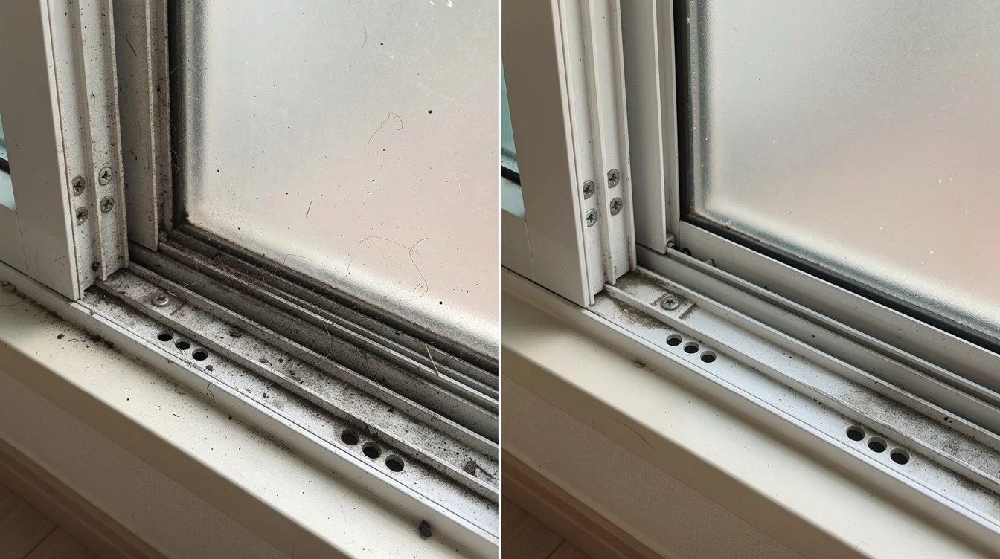
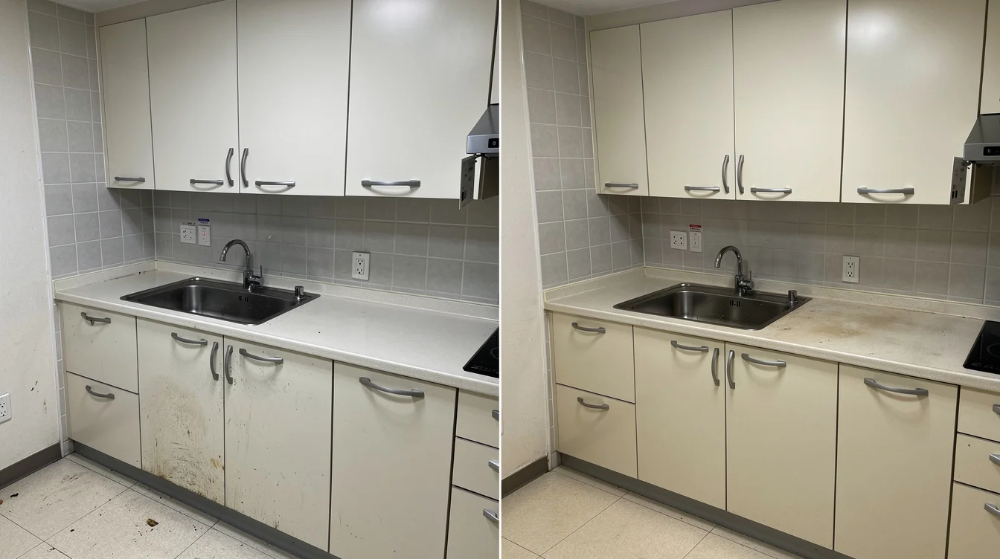
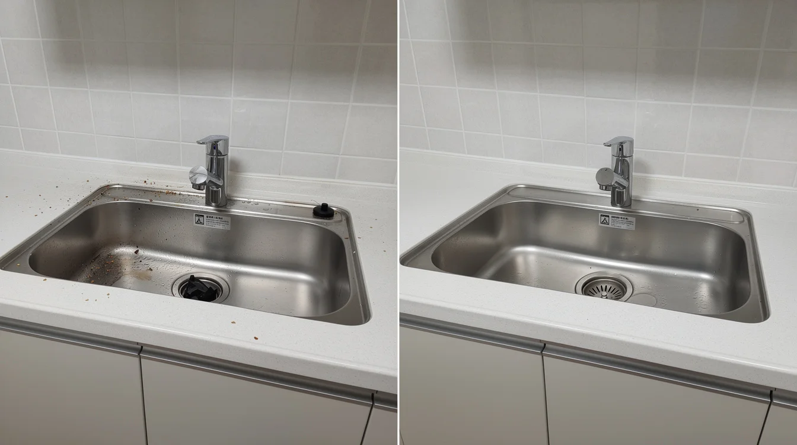
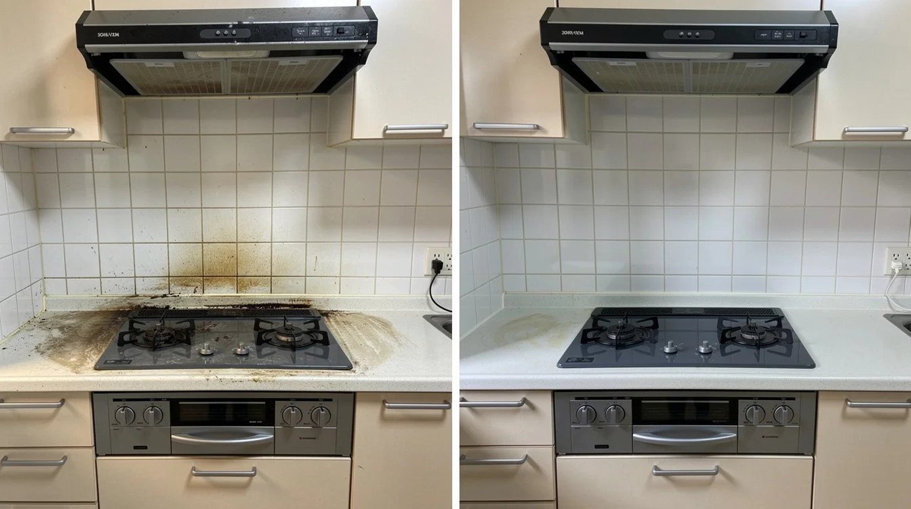
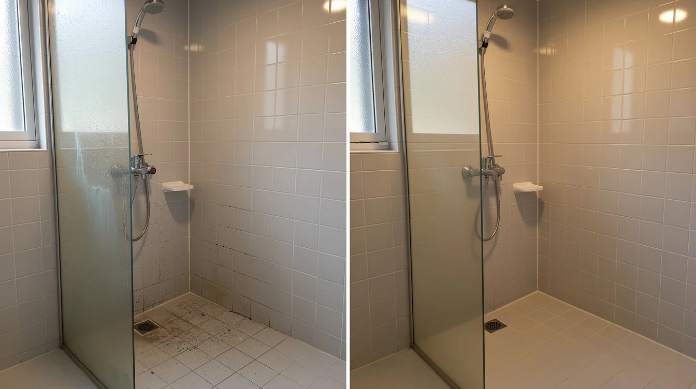

인천 삼산동 사무실청소 주말예약 청소업체찾기
청소 전 확인할 부분
인천 삼산동 사무실청소 주말예약을 알아볼 때는 가격만 비교하기보다 실제 청소 범위와 마감 확인 방식을 함께 보는 것이 중요합니다. 같은 평수라도 방과 화장실 수, 베란다와 다용도실 유무, 창틀 상태, 주방과 욕실의 오염 정도에 따라 필요한 작업이 달라질 수 있습니다. 체인지클린은 상담 단계에서 공간 구조와 오염 상태, 희망 일정 등을 확인하고 작업 범위를 안내합니다. 입주 전이나 이사 전 공실 상태라면 짐이 들어오기 전에 수납장 내부와 모서리까지 확인할 수 있어 청소하기 좋은 시점입니다.

주방 청소 범위
주방은 청소 후 체감 차이가 큰 공간입니다. 상부장과 하부장, 서랍 내부, 싱크대 주변, 후드와 조리대에는 생활 중 손이 잘 닿지 않아 먼지와 기름 오염이 남기 쉽습니다. 신축 공간도 공사 과정에서 발생한 미세 분진이 남을 수 있으므로 겉면만 닦기보다 위쪽에서 아래쪽 순서로 정리하는 것이 좋습니다. 옵션 가전 내부나 특수 오염처럼 기본 범위와 구분되는 작업은 상담할 때 미리 확인하는 것이 좋습니다.

욕실 청소 포인트
욕실은 바닥과 변기뿐 아니라 거울, 세면대, 수전, 샤워부스, 타일 표면과 배수구 주변까지 함께 확인해야 합니다. 물때와 비누 찌꺼기, 미세 먼지는 재질과 상태에 맞춰 정리해야 하며 표면 손상을 줄이기 위해 무리하게 긁는 작업은 피하는 것이 좋습니다. 작업 후에는 물기가 마른 뒤 얼룩이 남는지 살펴보고 손이 자주 닿는 부분과 모서리를 다시 확인합니다.

창틀과 베란다
창틀과 베란다는 외부 먼지의 영향을 많이 받습니다. 창틀 레일에는 미세먼지와 흙가루가 쌓이고 베란다 바닥과 배수구 주변에는 오래된 먼지가 남을 수 있습니다. 큰 먼지와 이물질을 먼저 정리한 뒤 오염 상태에 맞춰 세척하고 마지막에 잔여 오염과 물기를 확인합니다. 외창은 구조와 안전 조건에 따라 작업 범위가 달라질 수 있으므로 인천 삼산동 사무실청소 주말예약 상담 시 창 구조와 베란다 수를 함께 알려주시면 범위 확인에 도움이 됩니다.

방·거실과 바닥
방과 거실은 넓어 보여 단순하지만 문틀, 방문, 몰딩, 콘센트 주변, 붙박이장 내부와 바닥 가장자리처럼 놓치기 쉬운 곳이 많습니다. 신축이나 인테리어 후에는 위쪽의 미세 분진이 다시 내려앉을 수 있어 상부 먼지를 먼저 정리한 뒤 아래쪽으로 내려오며 작업하는 방식이 효율적입니다. 바닥은 재질과 상태에 맞춰 마감하고 구석과 걸레받이 주변을 다시 확인합니다.

견적 상담 시 확인사항
청소 견적은 공급면적이나 전용면적 하나만으로 완전히 정해지지는 않습니다. 구조와 오염도, 옵션 가전, 스티커나 보양지 잔여물, 곰팡이 또는 폐기물처럼 추가 작업이 필요한 요소에 따라 현장 조건이 달라집니다. 상담할 때 공간 사진과 방·화장실 수, 정확한 평수와 지역을 알려주시면 예상 작업 범위를 확인하는 데 도움이 됩니다. 기본 청소 범위와 별도 작업 항목을 사전에 확인하면 현장에서 갑자기 범위가 달라지는 상황도 줄일 수 있습니다.
체인지클린 청소 상담
체인지클린은 주요 구역을 순서대로 작업한 뒤 주방, 욕실, 창틀, 수납공간, 방과 거실, 바닥 등을 다시 살펴보며 마감 상태를 확인합니다. 아래 이미지는 실제 고객 현장을 증명하기 위한 사진이 아니라 청소 전후 상태를 이해하기 쉽도록 제작한 AI 예시 이미지입니다. 인천 삼산동 사무실청소 주말예약 일정과 범위가 궁금하시면 아래 간편견적에 내용을 남겨주시거나 상담직통 번호로 문의해 주세요.